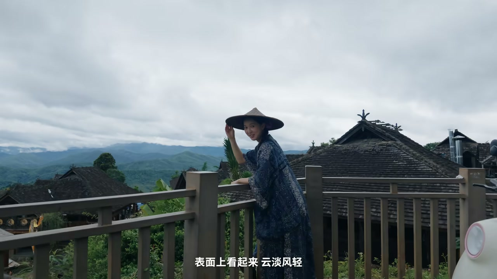
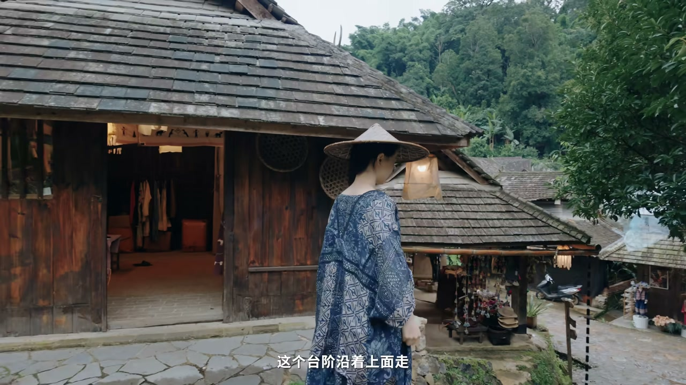
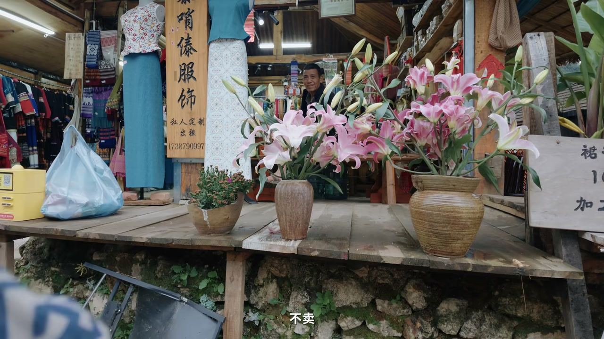
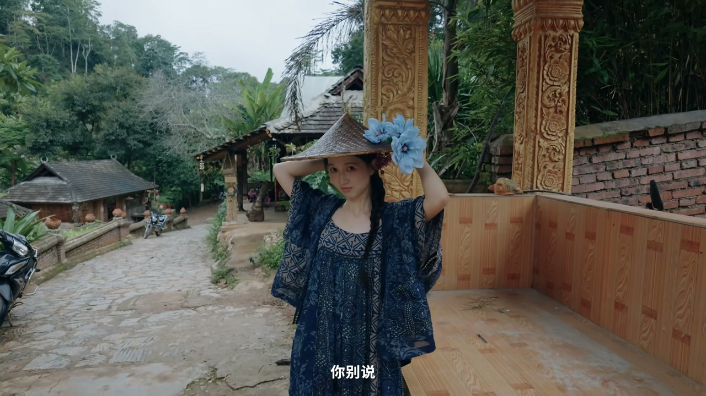
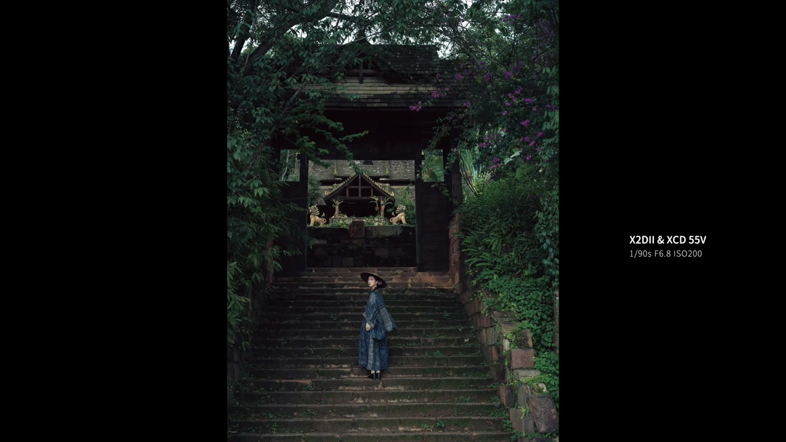
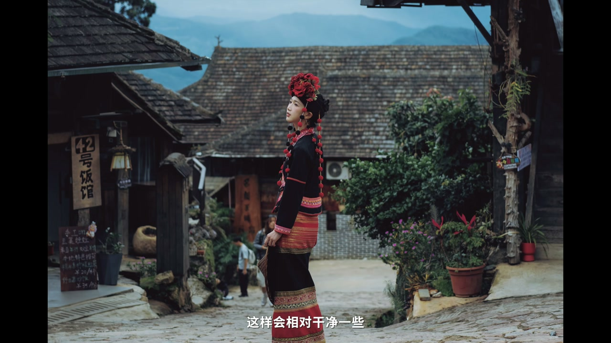
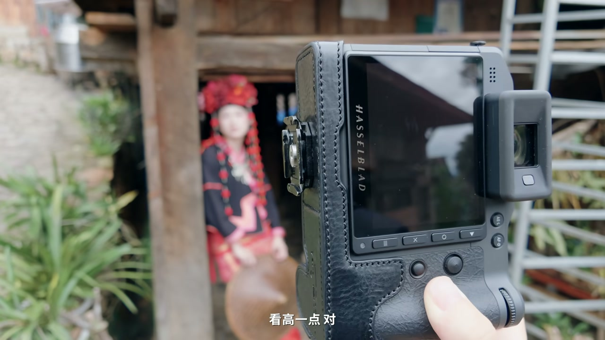

装备：X2D2 + 55V
00:50这次用到 X2D2 搭配 55V 镜头。X2D2 有连续自动对焦，可以抓拍——让人物动起来，按连拍捕捉自然瞬间。
06:50“他确实很无敌”——对器材的信任让拍摄更自信。


道具：花 + 百合 + 塑料袋
00:20在花店买的花又快用上了，营造归隐田园的感觉。
01:30逛到一家服装店门口，被百合花吸引——原本以为可以租或买，店家说不卖，但很热情地说可以借给我们拍照，很感谢。
02:51“你看不要随手扔垃圾，就便宜了我这种人吧”——捡了一个塑料袋和花当道具，这一段叫捡垃圾文学。


引导：台阶 / 回头 / 低头
01:00“你往上走吧，我这个台阶沿着上面走”——用环境引导动作，抓拍台阶上行。
02:40“这条巷子走下去很有感觉，先往前走，然后再回头，回头那里有好看的”——回头杀构图。
03:00“朝地上看一看”“低头的感觉”“头稍微往右倒一点点”——微调引导出状态。
场景：佛寺青苔 + 镜子
07:21生活的佛寺——发现青苔的感觉，场景细节都是灵感。
08:40在照镜子——镜像构图，“发射最底端那个球球”——用镜子做框架。
10:27这一趟景迈山拍摄之旅完美收尾。



好的写真不是摆出来的，是走出来的——花店买花、店家借花、地上捡塑料袋，加上台阶回头低头的动态引导，景迈山每一处都是创作现场。